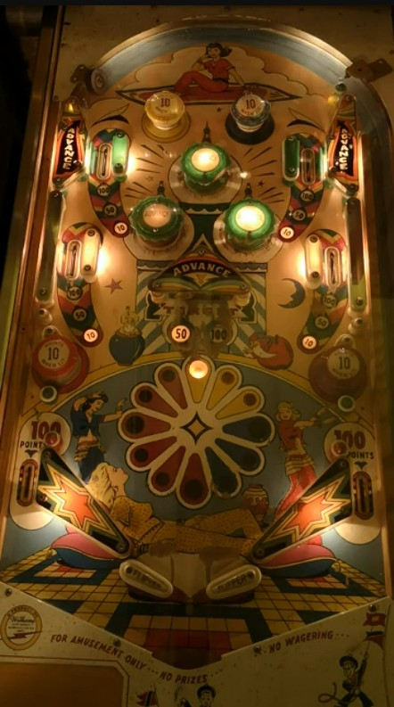

Pop bumpers, the switch behind the center swinging target, and the wall switches near the top side lanes, and (depending on operator settings) the slingshots all score one Advance. Each Advance moves the light one position clockwise on the colour wheel shown on the playfield. When the colour wheel is lit yellow, blue, red, or purple, the corresponding passive bumper is lit for 10 points- yellow in the top left, blue in the top right, red in the bottom left, purple in the bottom right.
At the start of each ball, the colour wheel resets its position; this, in turn, resets all 4 upper side lanes to a value of 10 points and resets the value of the swinging target to 50 points. After one lap around the colour wheel (12 advances), the 4 upper side lanes all increase their value to 50 points. After a second lap (24 advances total), all 4 upper side lanes as well as the center swinging target increase their value to 100 points. After a third lap (36 advances total), all 4 coloured passive bumpers will be lit for the rest of the ball, and no further advances can be scored.
Slingshots score 1 point. Out lane sscore 100 points. The flipper gap is somewhat smaller than other games from the first half of the 1960s. There are no gobble holes, extra balls, playfield specials, or ways to earn an end of ball bonus.
The below picture of Kismet's playfield was taken from this YouTube video, where it was uploaded by a user named Randy Brandy.
